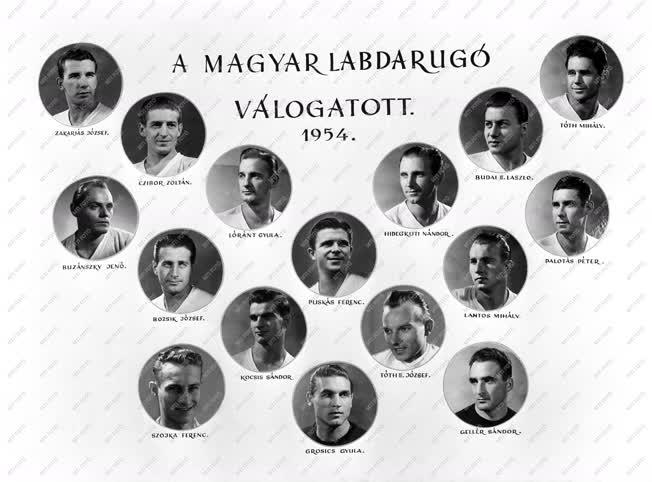
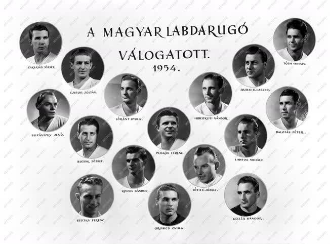

Az Aranycsapat minden idők legjobb magyar labdarúgó-válogatottjának díszítő jelzője és közismert neve.
A csapatban számos kivételes képességű labdarúgó játszott, de közülük is kiemelkedett Puskás Ferenc, aki emblematikus alakká vált, és ma is az egyik legismertebb magyar a világon
 

| Grosics Gyula | (1, kapus) |
| Buzánszky Jenő | (2, jobbhátvéd) |
| Lóránt Gyula | (3, középhátvéd) |
| Lantos Mihály | (4, balhátvéd) |
| Bozsik József | (5, jobbfedezet) |
| Zakariás József | (6, balfedezet) |
| Budai II. László | (7, jobbszélső) |
| Kocsis Sándor | (8, jobbösszekötő) |
| Hidegkuti Nándor | (9, hátravont középcsatár) |
| Puskás Ferkó | (10, balösszekötő) | Czibor Zoltán | (11, balszélső) |
A csapat 1950-től 1956-ig játszott együtt, minden idők legjobb magyar labdarugó-válogatottjaként tartjuk számon.
A valaha élt legismertebb és legnépszerűbb magyar ember Budapesten született, 1927. április 1-jén.
A szomszédban nevelkedett a másfél évvel idősebb Bozsik József, aki később a Kispestben és a válogatottban is együtt emelkedett Puskással a világhírig.
A helyi fiúk környékbeli grundokon rúgták naphosszat a saját készítésű rongylabdát, közülük a legügyesebbek – köztük a kis Puskás – a Kispest kölyökcsapatában pallérozódtak tovább, jórészt Puskás papa irányításával.